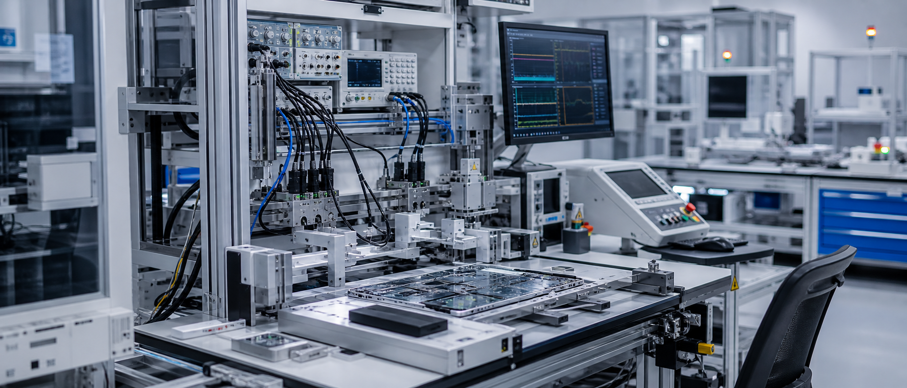

Engineering lives behind the product.

Career Story
From apps to factories.
From code to delivery.
Career Signal
Built through product coverage, platform migration, and factory delivery.
Engineering surface
Featured Work